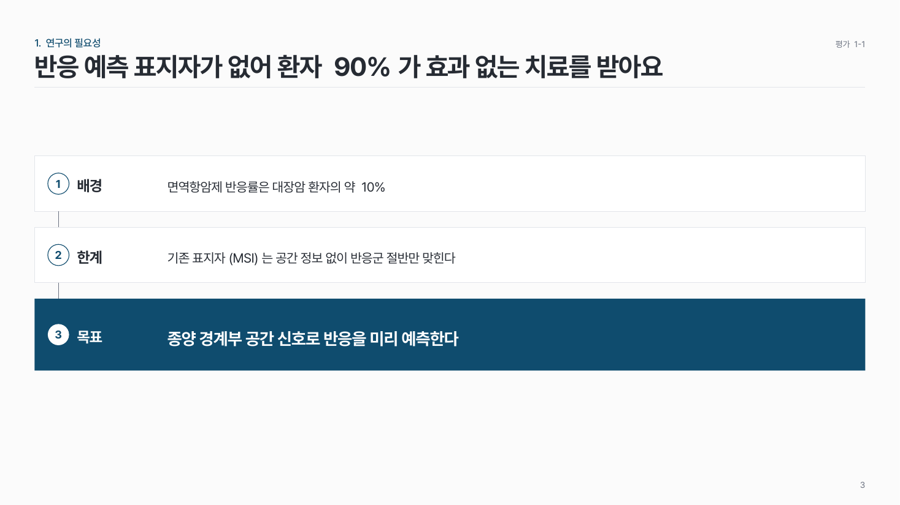

하고 싶은 말에 맞는 슬라이드를 골라요
상황을 고르면 추천 패턴, 같은 내용으로 만든 여러 시안, 만들 때의 팁을 볼 수 있어요. 시안은 PowerPoint 파일로 받아서 그대로 고쳐 써도 돼요.
한 장 = 한 메시지슬라이드 제목에 그 장의 결론을 문장으로 써요.
강조는 한 곳진한 색은 슬라이드마다 한 곳에만. 나머지는 같은 색의 옅은 명도로.
칸 먼저, 내용은 나중칸을 먼저 나누고 오와 열을 맞춘 뒤 글을 넣어요.
빈 서식(.potx)으로 시작하기
열면 HaLab 슬라이드 마스터(표지 · 목차 · 간지 · 본문 · 2열 · 마무리)가 깔린 빈 덱이 열려요. 위에서 고른 색 · 그라데이션 · 리치를 그대로 따라가요.
시안 pptx에서 장을 복사해 Ctrl+V로 붙이면 제목이 제자리에 들어가요. 시안 도형의 색은 붙여도 바뀌지 않으니 시안도 서식과 같은 색으로 받아요. 갤러리 시안은 16:9예요.
PPT 기본 팁
어떤 장이든 먼저 지킬 것들이에요. 줄 끝 링크는 그 팁의 출처인 피도리 게시물이에요.
만들기 전에
글씨
- 글꼴은 Pretendard 하나, 위계는 굵기로 (제목 Bold · 소제목 SemiBold · 본문 Regular) 디자인 3원칙
- 긴 제목은 핵심 구절만 굵게 촌스러움 고치기
- 크기: 제목 28–32pt · 소제목 18–20pt · 본문 12–14pt (A4 인쇄는 제목 20pt · 본문 10pt) A4 세로 문서
- 자간·행간은 값 하나로 고정 (제목 자간 살짝 좁게, 본문 행간 1.2–1.4배) 디테일 8가지 A4 세로 문서
- 제목·소제목·본문은 텍스트 상자 따로 글씨 습관
- 4줄 넘는 문단은 왼쪽 정렬, 원형 사진 아래 짧은 글은 가운데 글씨 습관
- 긴 글은 상자 크기 고정 + 양쪽 맞춤 (Ctrl+J) 고치면 퀄리티 2배
색
- 배경은 흰색이나 미색 (RGB 251, 251, 251), 쨍한 배경 금지 미색 배경 채도
- 글자는 순검정 대신 짙은 회색 (#262626), 설명은 중간 회색 (#666666) 자주 쓰는 서식
- 주조색 하나 + 강조색 하나, 단계는 투명도로 (100 · 80 · 60 · 40%) 고치면 퀄리티 2배 막대그래프가 질릴 때
- 강조색은 선명하게, 한 장에 한 곳만 디테일 8가지
- 큰 사진이 있으면 사진에서 색 뽑기 (스포이드) 채도
- 두 그룹을 빨강·초록으로만 나누지 않기 → 파랑·주황, 또는 ▲▼·라벨 함께 (색약이면 둘이 같은 색으로 보임)
- 촌스러우면 색 수부터 줄이기 촌스러움 고치기
칸·선·여백
- 바깥 여백은 마스터 안내선으로 고정 (네 모서리 1.3cm) 템플릿 공식
- 칸 사이, 라벨–제목–본문 사이 간격은 한 값 디테일 8가지
- 칸은 흰색 + 옅고 넓은 그림자 (투명도 90% 이상, 흐리게 = 간격 × 2), 또는 얇은 선 고치면 퀄리티 2배 자주 쓰는 서식
- 선은 글자 굵기 정도, 굵은 테두리 금지 촌스러움 고치기 디테일 8가지
- 도형 안 글은 내부 여백 줄이기 (좌우 0cm) 고치면 퀄리티 2배
- 남는 공간은 내용·그래프·사진을 키워서 채우기 강의하며 본 아쉬운 점 그래프가 하나뿐일 때
그림·아이콘
- 아이콘은 한 팩에서만, 채운 아이콘·선 아이콘 섞지 않기 디자인 3원칙 촌스러움 고치기
- 이모지 금지
- 사진은 비율 그대로 자르기, 늘리거나 찌그러뜨리지 않기 사진 비율·누끼
- 사진 여러 장은 간격 통일, 홀수면 중요한 사진을 크게 고치면 퀄리티 2배 글 많을 때·사진 홀수
- 가져온 그림엔 출처, 그래프엔 단위 (논문 그림은 저자·연도·저널) 글씨 습관 좌우 여백과 테트리스
AI 초안을 쓸 때
- AI 장표는 초안으로만, 글꼴·강조색·구도는 직접 대학원생 발표 워크플로
- 구도는 직접 잡고 그림만 AI로 피도리의 AI 사용법
- 점검 순서: 강약 → 시선 흐름 → 쪼개진 카드 → 줄바꿈 AI가 주로 하는 실수
- 화살표 많은 도식은 걷어내고 위→아래로 다시 쌓기 화살표 많은 AI 도식 고치기
- 숫자·단위·유전자·약물 이름은 원문과 대조
발표 전 점검
- 1분에 한 장 안팎, 넘치는 건 보충 장으로
- 약어는 처음 나올 때 풀어 쓰기
- 숫자·단위·표본 수(n) 마지막 확인
- 발표 PC에서 미리 열기, "글꼴 포함" 저장 (TTF) + PDF 챙기기
- 프로젝터에서 옅은 색이 날아가는지 확인
번호 · 칸 모양은 아이템 박스에서 비교해 보고 덱 전체에 한 가지로 골라요.
어디서 발표하나요?
자리마다 덱 흐름과 단계별 패턴, 같은 흐름으로 만든 예시 덱이 있어요.

랩미팅 Progress report
매주 랩미팅에서 지난 결과를 보고하고 도움을 받아요

Journal club
논문 한 편을 모두가 같이 공부하는 시간이에요

학회 구두 발표
우리 연구를 처음 듣는 청중에게 핵심 결과를 전해요

과제 발표평가
평가위원이 화면을 직접 읽으며 과제를 평가해요

수업 · 세미나
학생이 듣고, 나중에 다시 보며 복습해요
어떤 말을 하고 싶나요?

항목 나열
같은 모양의 항목 여러 개를 보여 주고 싶어요

순서·과정
단계를 차례로 보여 주고 싶어요

시간·일정
언제 무엇을 하는지 보여 주고 싶어요

구조·관계
누가·무엇이 어떻게 이어지는지 보여 주고 싶어요

비교·논리
비교하거나, 근거에서 결론으로 이끌고 싶어요

숫자·표
숫자로 보여 주고 싶어요

그림·사람
그림이나 사람을 보여 주고 싶어요

장의 틀
표지·목차·결론 줄처럼 장의 뼈대를 잡고 싶어요